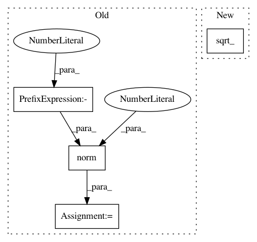

ed40be9f34cfbfa4c3ee0f6864a18f5fa4f733f8,gpytorch/kernels/cosine_kernel.py,CosineKernel,forward,#CosineKernel#Any#Any#,98
Before Change
x2_ = x2.div(self.period_length)
x1_, x2_ = self._create_input_grid(x1_, x2_, **params)
diff = torch.norm((x1_ - x2_).abs(), 2, -1)
res = torch.cos(diff.mul(math.pi))
return res
After Change
def forward(self, x1, x2, **params):
x1_ = x1.div(self.period_length)
x2_ = x2.div(self.period_length)
diff = self._covar_sq_dist(x1_, x2_, **params).sqrt_()
res = torch.cos(diff.mul(math.pi))
return res
In pattern: SUPERPATTERN
Frequency: 4
Non-data size: 4
Instances
Project Name: cornellius-gp/gpytorch
Commit Name: ed40be9f34cfbfa4c3ee0f6864a18f5fa4f733f8
Time: 2018-12-17
Author: jrg365@cornell.edu
File Name: gpytorch/kernels/cosine_kernel.py
Class Name: CosineKernel
Method Name: forward
Project Name: cornellius-gp/gpytorch
Commit Name: 9e4d2ba315b6b1269eca5396f2b9224b63207605
Time: 2018-12-19
Author: gardner.jake@gmail.com
File Name: gpytorch/kernels/cosine_kernel.py
Class Name: CosineKernel
Method Name: forward
Project Name: cornellius-gp/gpytorch
Commit Name: 9e4d2ba315b6b1269eca5396f2b9224b63207605
Time: 2018-12-19
Author: gardner.jake@gmail.com
File Name: gpytorch/kernels/matern_kernel.py
Class Name: MaternKernel
Method Name: forward
Project Name: cornellius-gp/gpytorch
Commit Name: ed40be9f34cfbfa4c3ee0f6864a18f5fa4f733f8
Time: 2018-12-17
Author: jrg365@cornell.edu
File Name: gpytorch/kernels/matern_kernel.py
Class Name: MaternKernel
Method Name: forward